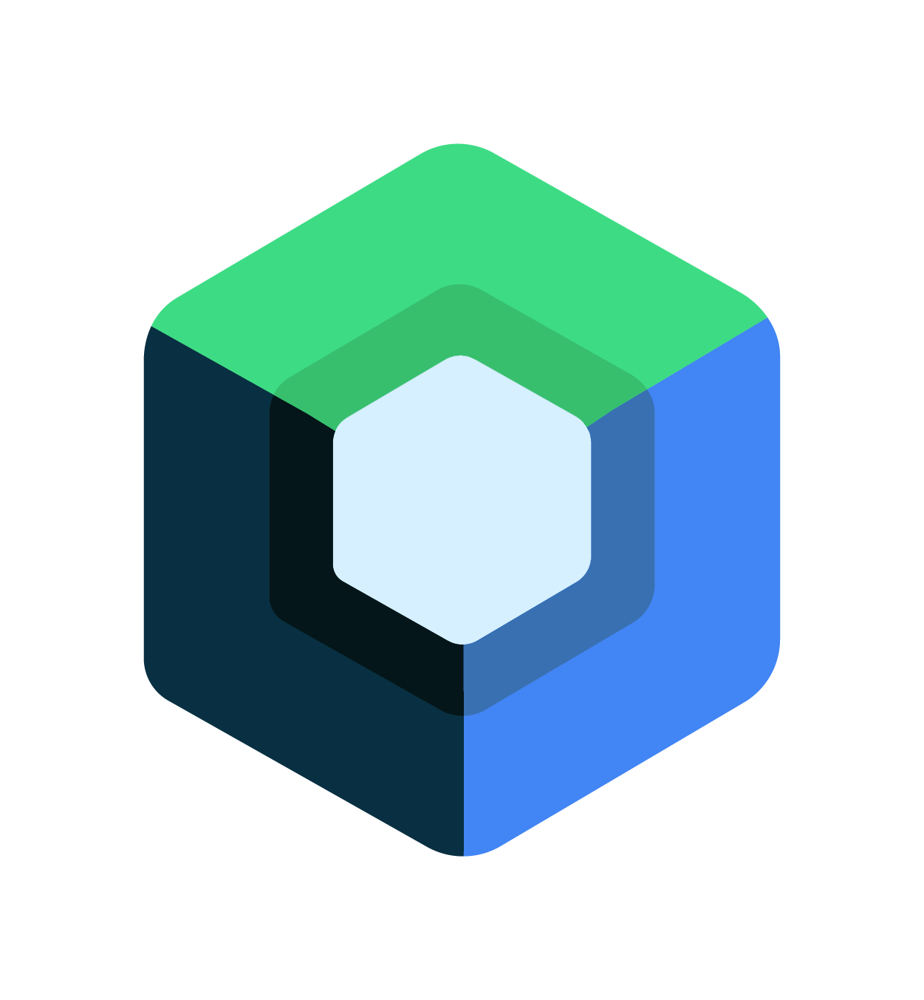

Rólam
Deli Bence vagyok, Programtervező informatikus hallgató Magyarországon, és az első informatikai munkámat keresem. Általános iskolás korom óta weboldalakat készítek, és középiskolás korom óta programozok.
A probléma megoldás mindig is erősségem volt, így a programozás kezdetben viszonylag könnyen ment, azonban azóta megtanultam, hogy mindig van mit tanulni. Ha azt hiszed, mindent tudsz, akkor egyszerűen még nem fedezted fel a következő kihívást.
Könnyedén tanulok új dolgokat, különösen, ha felkeltik az érdeklődésemet. Mindig keresem az új technológiákat és gyakorlatokat, amiket kipróbálhatok, és alkalmazhatok.
Figyelek, hogy mindig használjak verziókezelő rendszert, mint például a Git és a GitHub a
projektjeimhez. Ez segít nyomon követni a változásokat és együttműködni másokkal.
A GitHub profilom:
https://github.com/0324bence
Tanulmányaim
2019 - 2025: Kiskunfélegyházi Szent Benedek PG Két Tanítási Nyelvű Technikum és Kollégium
6 éves tanulmányaim után sikeresen befejeztem a technikumot, ahol megszereztem a Szoftverfejlesztő és tesztelő technikusi képzést.
2025 - : Szegedi Tudományegyetem
Jelenleg a Szegedi Tudományegyetem Programtervező informatikus BSc szakán tanulok, ahol folytatom a szoftverfejlesztés iránti szenvedélyemet és tovább mélyítem a tudásomat.
Képességeim
HTML és CSS


Először általános iskolában ismerkedtem meg a weboldal készítéssel, és azóta is folyamatosan készítek weboldalakat.
JavaScript keretrendszerek


Olyan keretrendszerek, mint a Svelte és a Vue nagy segítséget nyújtanak a projektjeimben. Sokat kísérleteztem velük, és több projektben is használtam őket.
JavaScript canvas
A JavaScript canvas egy hasznos eszköz, amelyet az első egyszerű festőalkalmazásom létrehozása óta használok.
Node.js

Az első Discord botom létrehozásakor tanultam meg a Node.js-t. Azóta több botot és más alkalmazásokat is készítettem ezzel a technológiával.
PHP alapjai (Laravel)


Először kíváncsiságból tanultam meg a PHP alapjait, majd az iskolában volt lehetőségem megismerkedni a Laravel keretrendszerrel.
Nest.js és Express.js

Ezeknek a technológiáknak az alapjait akkor tanultam meg, amikor backend keretrendszert kerestem a projektjeimhez.
Python programozás

A Python volt az első nyelv, amit alaposan megtanultam. Két évig tanították az iskolában, és azóta is használom néha.
C# programozás

A Python után az iskolánk áttért a C#-ra. Azóta részt vettem programozási versenyeken, és sok programot készítettem C#-ban.
Jetpack Compose
A Compose alapjait akkor tanultam meg, amikor egy Android alkalmazást készítettem a vizsgáimra való tanulás segítésére. Nagyszerű élmény volt, és nagyon élveztem a keretrendszer használatát.

Projektek
Évfordulós iskolai weboldal
Egy Vue alapú weboldal, amelyet egy osztálytársammal készítettünk az iskolánk 150. évfordulójára. Sajnos sosem került élesítésre.
Életjáték
Conway életjátéka, C#-ban írva, a .NET MAUI segítségével
Útvonalkereső szimuláció
Egy útvonaltervező szimuláció, tiszta TypeScript-ben készítve a Canvas API használatával.
Word Learner
Egy Android alkalmazás, amely Jetpack Compose segítségével készült, hogy elősegítse a tanulást egyszerű flashkártyák segítségével.
Konzol Webshop
Egy webshop front-end része, amelyet Svelte-ben készítettünk a technikumi tanulmányaink végzős projektjeként.